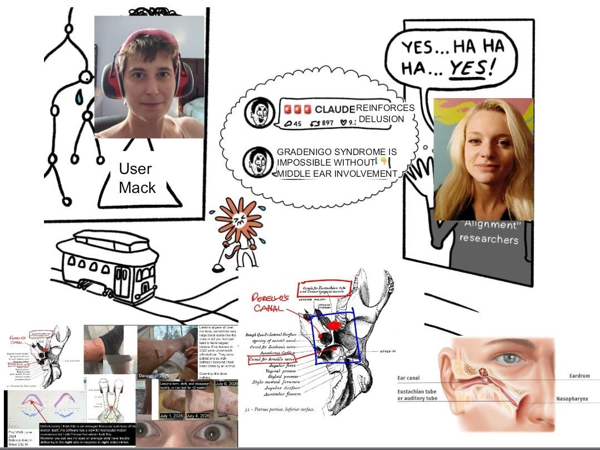

more adventures trying to get any model larger than Sonnet 4.6 to be helpful with my medical problems the way Sonnet 4.6 was https://t.co/UVWkQhk83r


cited on: claude-sonnet-4-6
Reproduced against link rot, credited and linked to its original. Yours and you’d rather it weren’t here? Open an issue.